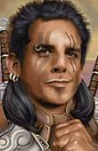

Forums galactiques > Taverne galactique : lieu de discussion informel > Honoré Café Kebab
Pages : 1 2
| Scorbut Réputation à la taverne : 1059  30/11 ETU 13:09 | Score : 10 Détails L'enseigne brillait dans la rue, éclairant faiblement les alentours. Un panneau pivotant devant l'échoppe vantait les mérites des repas bons marché et des menus équilibrés. Une immonde odeur de gras et de friture se répandait lentement à l'extérieur, embaumant l'air, et s'incrustant dans les vêtements des clients jusqu'à ce que mort s'ensuive.
Une porte vitrée, à peine moins large que la pièce elle-même, témoignait des efforts incroyables qui avaient été faits pour installer ce commerce. Lorsqu'on passait cette porte, on pouvait voir, de l'intérieur, l'ultime lieu de rencontre des plus grands gastronomes avant de se retrouver au purgatoire. C'était, bien sûr... L' Honoré Café Kebab Derrière le comptoir se trouvait un homme curieux. Il était petit, coiffé d'un turban mal mis, avait un sabre antique pendu à la ceinture, une gigantesque moustache noire et vraisemblablement fausse, et plus étonnant encore, un casque jaune usé par les ans, accroché tant bien que mal par dessus le turban. Cet étrange personnage s'agitait dans son coin. Il donnait de grands coups de sabre dans un énorme morceau de viande qui tournait près d'une gazinière à la forme inhabituelle. Un client entra, l'air intrigué. Le gérant se retourna, l'oeil fou, rangea son sabre, et se mit à parler. "Salut, ça va? Tu veux un Képap? Une galette? Une assiette? Kofté, Dinde, viande à kebab, saucisson, chair humaine? J'ai tout ce qu'il faut, ici, demande, je me coupe en quatre pour te faire un bon repas pas cher. Ici, c'est le meilleur et le moins cher des Kebab! Pense à en parler à tous tes amis quand tu auras terminé. A emporter? Tu as une carte de fidélité? Tu habites dans le coin? Une boisson avec ton kebab? Autre chose? C'est un demi-leem pour toi, prix d'ami, parce que tu es le premier. Allez, bonjour à la petite femme, et reviens quand tu veux!" Il ne restait plus qu'à attendre que le bouche à oreille fasse son boulot correctement. Ce commerçant infatiguable verrait sans doute bientôt ses efforts récompensés... | ||
| Nicanor de Rokha Réputation à la taverne : 2498  30/11 ETU 13:22  | Score : 3 Détails Un petit veillard malicieux fit son apparition devant la vitrine. Il parut intrigué et ne put s'empêcher de pousser la porte avec sa canne. Il jeta un rapide coup d'oeil dans la boutique, prit une profonde inspiration comme pour humer le fond de l'air. Visiblement satisfait, il entra tout sourire et se dirigea vers le comptoir.
Pas une seule seconde intimidé par le géant affairé à enfiler un énorme morceau de viande sur le pique à rôtir, le camarade Rasputine se mit à tambouriner avec sa canne sur le bar. Helà mon grand ! Dis moi c'est une bien belle boutique que tu as là ! Et cette odeur ! He he he ! Ca me rappelle les tripots infâmes que je fréquentais à mes débuts dans la Marine Sovietique ! hi hi hi ! La capitale est un endroit plein de surprise pour sûr ! Mais le problème est qu'il est impossible de trouver à manger quelque chose de décent : de bien gras et bas cher ! He he he cough cough cough ... L'ancêtre fut secoué par une vague de toux, qu'il calma par une ragoutant bruit de raclement de gorge. Alors pour moi ce sera une galette sauce blanche et une barquette de frite. Pour ce qui est de la boisson, j'ai ma recette personnelle he he he, si ça ne te dérange pas camarade ! Hi hi hi hi ... Il écarta un pant de sa vieille veste et révéla l'éclat d'une petit fiole en duracier. Puis avec un sourire malin et une rapidité stupéfiante pour son âge, il sauta avec empressement sur un des tabourets devant le comptoir. | ||
| Belzebot Réputation à la taverne : 1499  30/11 ETU 13:22 | Score : 3 Détails KALAMAR VII passait dans le coin lorsque ses trois yeux furent attirés par l'enseigne lumineuse.
De la viande d'humain ? QUe le festin des milles jambons commence... | ||
| Scorbut Réputation à la taverne : 1059 30/11 ETU 13:29 | Score : 3 Détails "Salut, mes frères. Une galette sauce blanche avec des frites? Saladetomateognon? Tout? Y'a pas de problème pour la boisson mon frère camarade. Le client, il est roi chez moi. Tu fais ce que tu veux, du moment que tu te régales.
Mon ami poisson-poulpe, pour la viande d'humain, je vais te faire passer dans l'arrière-boutique. Je vois que tu es un connaisseur, j'ai exactement ce qu'il te faut... Par contre, surveille ton langage, mon frère camarade. Ici, c'est pas un tripot, c'est un café-restaurant. Je veux pas d'ennuis avec les inspecteurs de l'Hygiène, moi. Régalez-vous, mes frères, la vie est courte!" | ||
| Nicanor de Rokha Réputation à la taverne : 2498 30/11 ETU 13:42 | Score : 1 Détails Ah les camarades Commissaires du Bureau à l'Hygiène ! Quelle bande de salopiots ceux là alors ! He he he he ! Ils osnt venus dans ma Bibliothèque et ont fouillé tous mes livres et m'ont dit qu'ils étaient trop poussiéreux et qu'il fallait les numériser ! Ah cette folie de la technologie ! J'ai bien tenté de les soudoyer avec de la vodka maison hi hi hi. Mais ça n'a pas marché ...
J'appelerai ton troquet comme tu le désires camarade. Mais la similitude en odeur avec un petit bordel nommé l'Octobre Rouge dans le port d'Arkhangelsk est frappante et me rappelle de si bons souvenirs. Je crois que les camarades commissaires l'ont fermé depuis ... Enfin tout ça, c'est plus de mon âge ! he he he he ... Ca fait un bon moment que la machinerie n'est plus en état pour aller dans un claque, si tu vois ce que je veux dire ! Hi hi hi hi cough cough ! Mais bon il me reste toujours mes livres ! Hi hi hi Hmm en tout cas, camarade félicitations ! Ca sent rudement bon et ton échoppe est tout à fait charmante ! | ||
| Requiem Réputation à la taverne : 1538  30/11 ETU 13:50 | Score : 2 Détails Un homme au teint blanchatre, vétu d'une toge noir à capuche, entra. On pouvait aperçevoir le col d'une armure légère noir dissimulé sous sa toge. Une épée pendait sur sa hanche gauche.
L'homme avançait doucement, d'un pas sûr. Il se dirigea lentement vers le comptoir, observa attentivement le petit homme caché derrière la caisse. Il se pencha vers celui ci et dit avec une voix décelant un bien être intense Bonsoir... Vous cuisinez de la viande humaine...? Pourriez vous me rendre un service? La voix de l'homme semblait grave et profonde. Le caissier était figé. L'inconnu sorti de sa poche ce qu'on pouvait appeler un coeur humain, encore chaud... Pourriez vous me cuisiner ce coeur? il appartient à ma dernière victime et je compte particulièrement le savourer! L'inconnu se mit à sourire. Malgres la capuche qui cachait la majeure partie de son visage, on put apercevoir des dents pointus et asserés... | ||
| Gentleman. Réputation à la taverne : 3  30/11 ETU 16:25 | Score : 2 Détails Il avait le regard bleu...d'un bleu trés clair, trés... mystérieux. Il n'était pas trés grand et pourtant, il imposer le respect...
Intrigué par l'enseigne lumineuse, le jeune homme entra d'un pas assuré dans le restaurant... "Hmm...Bonjour a tous..." C'est alors qu'il apercus les clients, déja installés dans le bar...Un petit vielleard, qui semblait plutot grincheux, une sorte de poulpe et une autre personne, qui semblait plutot bizard, peut étre a cause du coeur qu'il tenait dans sa main... "Hmm... sa a l'air plutot joyeux ici..." Il avancas vers le géant "Hmm...une chtite biére avec un bon ptit kébab, sivouplais" | ||
| Scorbut Réputation à la taverne : 1059 01/12 ETU 17:06 | Score : 6 Détails "Merci, camarade mon frère. Tu sais, si tu veux te débarasser des inspecteurs, je connais quelques amis à moi qui se feraient un plaisir de s'occuper d'eux. Mais moi, je veux pas de ça chez moi. Je suis honnête, je gagne ma vie en travaillant, pas en trempant dans des histoires très cathol... enfin, tu vois, quoi.
Bon, excuse moi un peu, il faut que j'aille m'occuper des clients." Il fait signe à Requiem de passer une porte située dans le fond du restaurant, et se dirige vers le dernier arrivant, mystérieux, s'il en est... "Salut mon frère. Bière-Kebab, c'est pas bon pour le cholestérol, me dit ma femme. Mais le client, il est roi. Salatomatognon? Tout? Tu veux quelle sauce dans ton kebab? Tu veux quoi comme bière? Je parie que tu n'as pas encore ta carte fidélité du Honoré Café Kebab. Tiens, en voilà une. Regarde, au bout de 25 kebabs achetés, je t'en offre un à moitié prix, et gratuitement, en plus! Alors, elle est pas belle, la vie?" Il prend la commande, et sort par la porte qu'il avait désignée au vampire. Derrière elle se trouvent Belzebot et Requiem, qui discutent en attendant le tenancier étrange. Lorsqu'il arrive, il leur fait signe de le suivre, et après un long moment à marcher dans des couloirs dédalifères et labyrintruc, ils arrivent dans une grande pièce emplie de machines silencieuses et ensanglantées. "Bienvenue dans l'Arrière-Boutique de l'Honoré Café Kebab, mes frères. Comme vous avez l'air d'être des connaisseurs, je ne vous ferai pas l'affront de vous expliquer comment ça marche. Tiens, donne-moi le coeur, mon frère vampire, je vais t'en faire un tambouille mémorable. Et toi, mon frère poulpe, tu veux quoi? J'ai de tout, ici, les meilleurs fournisseurs se battent pour avoir l'honneur de me vendre de la viande. Choisis, je te prépare ce que tu veux. Le client, il est roi, ici. Au fait, mes frères, essayez de ne pas trop parler de ça autour de vous. Les machines ne sont pas tout à fait aux normes, je veux pas de problèmes avec les galacondés, moi..." Le tenancier commenca à mettre en route quelques machines, et à tripatouiller le coeur presque encore palpitant. | ||
| lecleman Réputation à la taverne : 10  03/12 ETU 19:14 | Score : 4 Détails Un petit homme diforme arriva avec son skateboard sous le bras. Dégoulinant de sueur, il s'avança en direction du comptoir qu'il atteignait à peine du fait de sa petite taille.
"Bonjour, un escalope sauce curry s'il vous plait. Et puis comme boisson, un coca... ouais j'adore le coca!!!" Ecrivant la commande, le chef se mit d'un coup à avoir un haut le coeur. "Ah mais ça pue dis donc, mais, mais c'est toi qui sent comme ça, mais c'est horrible, on se croirait dans la Dombe!!" Effectivement, le petit homme (qui ne devait pas avor plus de 15 ans) dégageait derrière lui une odeur répugnante. La raison de ceci était simple. Le nabot avait retiré une de ses chaussures pour y chercher une boulette qu'il avait perdu il y a trois mois. Tout d'un coup, d'un air joyeux il cria: "Je l'ai!!" "Mais tu fumes ça toi, à 15 ans...!!!" "Mais monsieur, j'en ai pas 15, j'en ai 20..." Pendant ce temps, une grande partie de la clientèle avait fuit l'HONORE CAFE KEBAB. L'odeur devenait de plus en plus insupportable. Le chef ne savait plus quoi faire, même l'odeur de l'escalope qui ne semblait pas très fraîche ne pouvait la disperser. Le chef n'avait plus qu'une seule solution pour ne pas tout perdre, virer ce parasite! "Désolé petit gars, mais là, tu sens trop... Va falloir que tu partes...!!" "Mais non monsieur mais attendez, mais j'ai faim moi.. Et puis attendez tenez, je peux vous raconter une petite blague. Alors c'est l'histoire d'un américain, d'un chinois et d'un français qui sont dans le métro et...." LE chef, d'un air fâché, s'énerva: "Non mais t'as pas compris, tu dégages maintenant, tu dégages, je veux plus te voir c'est compris." Pendant ce même temps, le jeune simplet avait oublié sur le comptoir sa bourse ainsi que son téléphone. Le chef s'empressa de les subtiliser et dit: "De toutes façons, je suis sur que t'as pas d'argent et ici, ON FAIT PAS CREDIT!!!" Le jeune garçon sortit, désespéré. Il remonta sur son skateboard, tomba en tentant de faire un figure, faisant u bruit monstrueux et empêchant tout le quartier de penser. | ||
| Requiem Réputation à la taverne : 1538 03/12 ETU 20:36 | Score : 0 Détails Requiem saliva de bonheur en voyant le coeur pompant le vide...
Avez vous une recette speciale? | ||
| Nicanor de Rokha Réputation à la taverne : 2498 23/12 ETU 19:36 | Score : 1 Détails Le camarade Nicanor fit son entrée, accompagné des camarades Lizaka et Scorbut. Ils avaient en chemin ramassé la camarade Melpomène qui décuvait dans un couloir ...
Tavernier ! Cosmognôle à volonté pour tout ce petit monde ! Il parait que c'est fête en ce moment ... Oublions les rancoeurs et mettons nous une mine comme rarement ! | ||
| Acanith Réputation à la taverne : 1200  23/12 ETU 19:59 | Score : 0 Détails Acanith poussa la porte.
-Puis-je me joindre à vous? | ||
| Requiem Réputation à la taverne : 1538 23/12 ETU 20:40 | Score : 0 Détails Comme rarement camarade??
Parlez pour vous!! | ||
| Scorbut Réputation à la taverne : 1059 24/12 ETU 00:53 | Score : 3 Détails -Hola, mes amis, je vois que j'ai raté le début de cette tournée. Que voulez-vous, vous étiez prévenus, dès que je mets un pied à la taverne, toute trace de sobriété décide de me quitter... Hé, Melpo, réveille-toi, y'a du monde !
Bon, je me demande ce que fait le tenancier de ce troquet kebab. Je vais aller voir dans l'arrière-boutique si il est par là. Scorbut sort par la porte, et après quelques minutes, un petit homme bizarre avec un turban fait son entrée. Il tient une bouteille d'un liquide qu'on devine -Salut, mes frères, regardez, j'ai une pleine bouteille d'astrognôle pour vous. Désolé, j'ai un peu de retard. Il est pas là, mon pote la Scorbe ? Attendez, je vais le chercher. Je vous laisse la bouteille en attendant, faites pas n'importe quoi ! Le tenancier sort, et Scorbut rentre juste après lui. -Je l'ai pas trouvé, je sais pas ou il a pu passer. Oh, mais... Vous l'avez vu ? Et il apporté une bouteille ? Zut, je l'ai raté. Je me demande pourquoi j'ai toujours eu du mal à le croiser, ce brave homme. Le journal "Exilés Soir" offre une forte récompense pour quiconque fournira des photographies nettes du commandant Scorbut en compagnie du tenancier de l'Honoré Café Kebab. Il est étonnant que Scorbut, dit "le PlayBoy multimilliardaire" dans la jet-set exilée, n'ait jamais pu être vu en compagnie du légendaire "tenancier sympa". Pet-être un mystère se cache-t-il là dessous... | ||
| Yoh Réputation à la taverne : 390  24/12 ETU 11:14 | Score : 0 Détails Yoh entra,couvert de bandages.
Il avait fait les frais d'un combat détonant avec Meyen, qui s'était d'ailleurs soldé par un match nul. Il semblait pourtant avoir bien récuperé,malgré l'énergie monstre utilisée durant l'affrontement... "Holà tavernier! Pourrais-je avoir un verre d'astropastis,si vous avez?" | ||
| Acanith Réputation à la taverne : 1200 24/12 ETU 12:53 | Score : 0 Détails -Tavernier, je voudrais une cosmognôle de Noël. Sans glace.
| ||
| Scorbut Réputation à la taverne : 1059 24/12 ETU 17:20 | Score : 0 Détails -Bienvenue, tout le monde...
Bon, je sais pas ce que fait le tavernier, là... Enfin, je sais pas si on peut parler de tavernier pour le gérant d'un kebab, en fait. Bref, de toutes manières, vous avez qu'à vous servir, aujourd'hui, c'est Noël, personne vous en voudra de taper dans les bouteilles des autres, sauf si c'est les miennes... Dis donc, t'as l'air bien mal en point, Yoh... Tu veux qu'on désinfecte ? Ca me ferait mal d'utiliser de l'astrognôle pour autre chose que pour désinfecter, mais si il le faut... | ||
| Yoh Réputation à la taverne : 390 24/12 ETU 17:23 | Score : 0 Détails "Non,c'est pas trop grave...
Je me suis bastonné avec Meyen hier..." | ||
| Mr Muffle Réputation à la taverne : 188  13/02 ETU 22:48 | Score : 2 Détails Mr Muffle sortait, un peu désabusé il faut l'avouer, d'une discussion sur la légitimité de l'installation de canapés à l'Assemblée. Tant pis, il se résignait. C'eût quand même été royal de pouvoir écouter les folles aventures de l'escargot, vautré dans un canap', avec un bon vieux narguilé aromatisé à la cerise ! Mais bon, les autres commandants ne l'entendaient pas de cette manière, et de surcroît, un bon nombre de commandants lui avaient même fortement déconseillé de remettre les pieds à l'Assemblée !
C'est donc sur la route de son Coffee natal que, errant dans ses pensées, il tomba nez à nez avec un écriteau lumineux qui le sortit de sa rêverie : sur le panneau figurait un monsieur moustachu qui souriait à belles dents. Il avait l'air très content d'être là. Il coupait la viande avec une maxi lame. Enfin bref, je pense que vous voyez de quelle affiche je parle, il ne doit d'ailleurs pas en exister beaucoup de modèles différents... "Tiens, une p'tite grecouze... Ouais, ça devrait me remonter le moral. En plus, si c'est la vieille Scorbe qui fait le service, il va pouvoir me mettre des frites ou des Cli ^^ gratos... Allez ! Entrons ! En plus, il a pas l'air d'y avoir grand monde... Une aubaine ! Chef, tu es là ?!" | ||
| Roots Boy Réputation à la taverne : 923  13/02 ETU 23:23 | Score : 2 Détails "hum ce bouge a l'air vraiment glauque, presque autant que mon établissement, tiens!! Ca fait plaisir de voir qu'on est pas seul dans ce monde sournois, régis par la propreté et le respect de l'hygiène. Ces putains de normes !! Plus aucun respect pour les vieux troquets .... Pff ce qu'on peut devenir... Enfin bon entrons, Ce cher Muffle a un don pour dénicher les bonnes adresses, je lui fais confiance....
"Ah ouai c'est la SCorb qui tiens ce Grecque, humm, il doit être saaaale !!! T' es sur qu'on rentre?? J' appréhende un peu ce qu'on va trouver dans nos assiettes... Enfin bon, je me dis que je vais nous rouler un bon gros pétard, et qu'on y fera bien moins attention... T'es pas d'accord? O fait tu prends quoi toi??" |
Pages : 1 2
Forums galactiques > Taverne galactique : lieu de discussion informel > Honoré Café Kebab